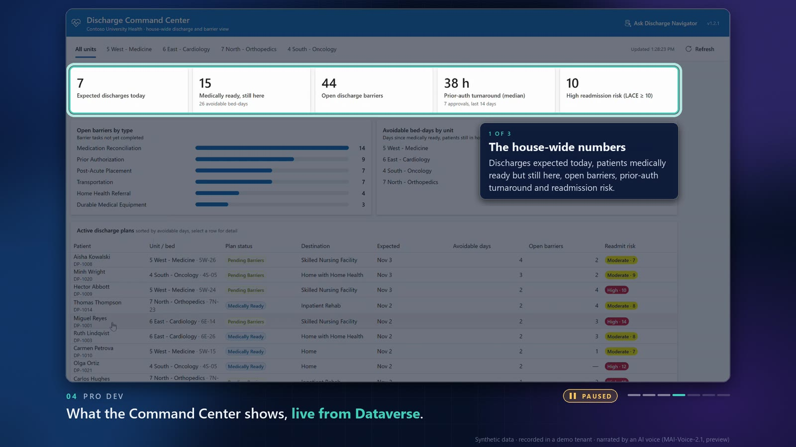
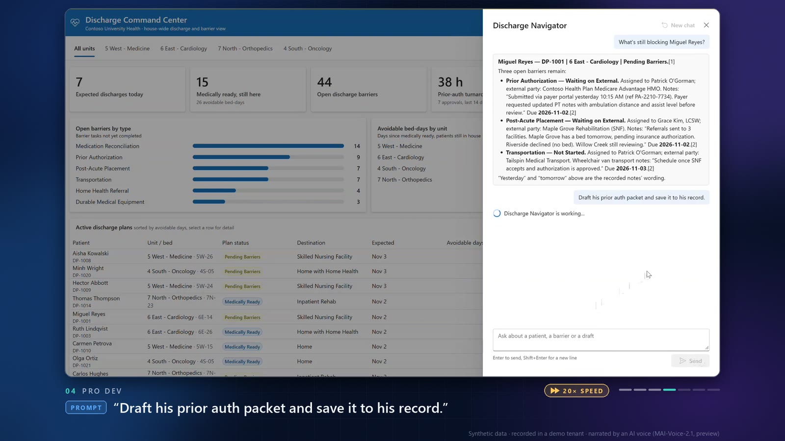

How it's made
The tools behind the narrated demo video, the hero video, the deck and these docs. There's no video editor: one Python script builds the whole video from O'G's screen recordings, so every change is an edit to the script and a re-run.
12 min 0 s1920x1080, 30 fps, 81 MB
6screen recordings, one per chapter
38callouts, in 12 paused tours
101narrated lines, one AI voice
28deck slides, in step with the video
~25 minfor a full build
The tools
| Tool | What it is | What it did here |
|---|---|---|
| Footage | ||
| Screen recordings | O'G's captures of the live demo | Six MP4s, one for each of chapters 1 to 6, of the real apps running on synthetic data in a demo tenant. They stay out of git (videos-do-not-put-in-repo/, a copy on each laptop). |
| Edit and render | ||
build_demo_video.py | Python 3.13 script, about 1,500 lines | The edit, as code. For each chapter: which stretches of the recording to keep, how fast to play them, the captions, the callout tours and the narration, all timed in the recording's own seconds. It renders each segment, joins them, and keeps the deck in step. |
| FFmpeg 7.1 | Open-source command-line video toolkit, bundled in the imageio-ffmpeg Python package |
Trims and speeds up the recordings, crops and scales them into the frame, layers on the frame, captions, badges and tags, dissolves between segments, mixes in the narration, and encodes the final H.264/AAC MP4 with chapter markers. |
| Pillow | Python imaging library | Draws every graphic: the frame around the recording, captions, speed and PAUSED badges, product tags, all the cards, and the callouts. |
| NumPy | Python numeric library | The navy background (color washes, soft glows, a faint grid, and dither so the gradients don't band), the gradient chapter numbers, and the narration mix. |
| Segoe UI | Windows system font | All on-screen type, the same family as the hero video and the apps. |
| Microsoft product icons | Official Copilot and Copilot Studio logos | The product tags in chapters 1 and 2 (Copilot Studio's comes from Microsoft's Power Platform icons). |
| Narration | ||
| Azure Speech: MAI-Voice-2.1 (preview), voice "Grant" | Microsoft's own text-to-speech model, from the project's Foundry resource | Reads all 101 lines. Each line goes as SSML, with <sub alias> for words written one way and said another (Microsoft 365, gpt-5.5, PT, MCP, 6 East). Lines are generated once and cached, so editing a line regenerates only that line (ADR-0018). |
| Azure CLI and Entra ID | az account get-access-token |
Signs the build in to Speech without keys, because the resource has key auth turned off (KI-36). |
| Azure Speech speech-to-text | The same resource, the other direction | Transcribed every line back to check the voice said what the script says, then spot-checked the finished video's timing. |
| WebVTT and MP4 chapters | Standard captions file; chapter metadata in the video | demo-video.vtt is the narration word for word (subtitles on the hero video page). Players that list chapters show all seven. |
| Hero video and stills | ||
| HTML and CSS animation | docs/hero/animation.html |
The 28.5-second hero video is a web page: CSS keyframe animations on a 1920x1080 stage, with a capture mode that pauses everything and window.seek(ms) to show any moment. FFmpeg turns the frames into hero.mp4, in standard color range so PowerPoint doesn't wash it out. |
| Playwright, through its MCP server, in Edge | Browser automation | Captured the hero video frame by frame (855 frames at 1920x1080), screenshotted the two deck slides the video uses (the request prompt and the architecture), and checked the deck at 1920x1080. |
| Deck and docs | ||
deck.html | Hand-built HTML slides: 16:9, sized in container units, inline CSS and JavaScript | 28 slides that follow the video slide for slide, each with notes. Recording slides play their stretch of the video, muted. Every build checks the slide order and writes the card slides, their times, and the narration into the notes. |
HTML docs and docs.css | 19 pages, one stylesheet, one nav (ADR-0013) | Status, runbook, decisions, known issues, changelog and the guides, including this page. Light theme, no build step. |
| SVG and Mermaid 11.4.1 | Hand-written vector drawing; a text-to-diagram library | The architecture diagram (technical guide, and the deck's slide) is hand-written SVG. The flow diagrams on Home and in the technical guide are Mermaid. |
Python http.server | Python's built-in web server | Local preview of the docs, the deck and the hero animation. |
| Who and where | ||
| Claude Code | Anthropic's coding agent, in the terminal | Wrote the scripts, the edit, the captions, callout notes and narration (to O'G's direction and within the narration guardrails), the deck and the docs. It read frames from the recordings to place every callout box, and it checked the results. |
| Microsoft Learn MCP server | Microsoft's documentation, searchable from Claude Code | Looked up the Speech REST API, Entra ID sign-in for Speech, and the MAI voices. |
| Git and GitHub | Version control and hosting | The working repo holds the scripts, the docs and the finished cuts (never the recordings). make_public_snapshot.py publishes a cleaned-up public copy (ADR-0019). |
How the callouts work

A callout tour pauses a recording on one frame and walks through parts of the screen, one box and one note at a time. Every chapter but the huddle has at least one, and a tour can sit on a deck slide too (the architecture, in chapter 7).
- Mark the moment. In the script, a stretch of a recording gets
tour=. The video plays to the end of that stretch and holds there, and FFmpeg pulls out that exact frame. - Write the steps. Each callout is one
step(): a title, a box in the recording's own pixels, the note, and the narrator's line.step("The house-wide numbers", (24, 162, 1748, 296), "Discharges expected today, patients medically ready but still here, ...", say="Across the house: discharges expected today, ...") - Find the boxes. Claude pulled frames from the recording with FFmpeg, tiled them into contact sheets, read them, and wrote down the pixel coordinates. The build's
--reviewsheets of the finished video confirm the boxes land where they should. - Draw it, 30 frames a second. Pillow paints every frame of the pause:
- The screen dims under a navy layer.
- A rounded teal box with a soft outer ring marks the part. It's drawn at twice the size and scaled down, for smooth edges.
- The box settles onto the first part, then glides to each next one (an ease-out over 0.55 s).
- The note card ("1 OF 3", a title, the text) rises in beside the box, on the first side where it fits: right, left, below, then above.
- Time it to the voice. A callout stays up long enough to read (at least 3.8 s, at about 4.5 words a second) or until its narration line ends, whichever is longer.
- Splice it in. The frames go straight to FFmpeg as raw pixels and become a clip that slots in between the recording's parts. The video plays, pauses for the tour, and plays on.
Everything else on screen

- The frame. The recording sits in a rounded window with a drop shadow, on the hero video's navy background. Underneath: the chapter's name, a seven-step progress row, and the fine print (synthetic data, demo tenant, AI voice).
- No zooms. Every recording plays as the whole window, so viewers keep the context (O'G, 2026-11-02).
- Captions. One line under the window, with key words in teal. Anything typed into an app gets a blue PROMPT tag and quotes. A caption that's too long shrinks to fit one line.
- Speed badges. Any stretch played faster than real time shows an amber pill with a fast-forward icon. Back-to-back stretches at the same speed share one badge.
- Product tags. A logo pill hangs off the window's top-right corner in chapters 1 and 2 (Microsoft 365 Copilot with Work IQ; Copilot Studio).
- Cards. The title, the use case, the cast, and two cards per chapter (the chapter card and "What you'll see"). Each layer rises in on its own beat, then everything fades back to the background.
- Smooth scrolling. Where a response is scrolled, only the stretches where the picture moves are kept. A frame-difference pass finds the stops between scroll-wheel turns, and they're cut.
- Dissolves. Every segment fades up from the bare background and back to it in 0.35 s, so cards and chapters run into each other.
From script to MP4
- Fit the picture to the voice. Before anything is drawn, the build makes room for each narration line. Callouts, cards, slides and held frames get longer, and a sped-up stretch slows down where a line would otherwise run into the next.
- Render, then join. Each segment renders on its own (
--only b4rebuilds just one). FFmpeg then joins them into H.264 at CRF 18, with the narration as 96 kbps AAC at −16 LUFS, chapter markers, and fast start for streaming. - Check.
--reviewsaves a frame from the middle of every caption, six to a sheet. Steps for the whole thing are in Runbook > Build the demo video and Render the hero video.